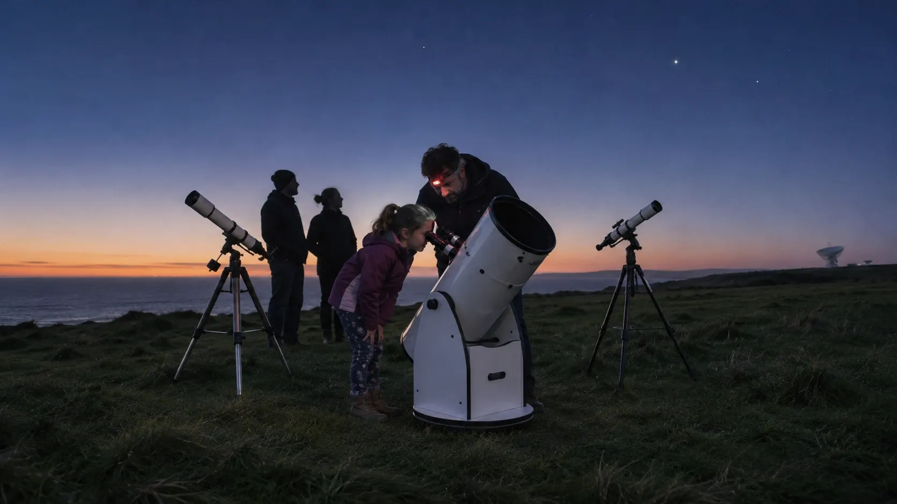

PL-01Planetarium
Tonight's Sky
A live presenter flies the dome to whatever is up over the Lizard tonight, then sends you outside knowing where to look.
WhenTue to Sun11:00, 15:00

The same sessions run every week. Observing needs a clear sky: we make the call at 16:00 and post it here and at the gate.
A live presenter flies the dome to whatever is up over the Lizard tonight, then sends you outside knowing where to look.
Lights stay low, never off. A gentle first show with the Moon, a rocket and a great deal of counting down.
Stand in the dish hut while Dish One points along the Milky Way and the 21 cm hydrogen line climbs out of the noise on the screen.
How a ring system 280,000 km across can be ten metres thick, and why it will not be there for ever. Saturn is due south on clear evenings this month.
Jupiter's storms and moons at the scale of the dome, built from spacecraft data. On clear Thursdays the show ends at the telescopes as Jupiter rises.
Build a water rocket, fly it across the old car park, write down how high it went. Waterproofs strongly advised.
Up the ladder into the azimuth bearing room, where 200 tonnes of steel turn on a ring of steel balls the size of oranges.
Told at console 4, where the night shift relayed the July 1969 pictures to Europe, by a volunteer who was on the late bus home that morning.
A working astronomer, engineer or historian in the control room. Tea from the urn and questions until the caretaker turns the lights down.
The station's old job. We predict the evening's space station and satellite passes and you call them out as they cross the headland.
Craters along the terminator through the 406 mm Dobsonian, with a volunteer at the eyepiece. Clear skies only; we call it at 16:00.
Andromeda, the Pleiades and the Orion Nebula from a Bortle 3 headland, one volunteer to every telescope and a flask of soup at half time.
Nothing on that day
Observing runs on Friday and Saturday nights, talks on Wednesday and Sunday.
Go or no-go. The duty astronomer checks cloud and wind and posts the call here, by text to ticket holders, and on the board at the gate.
Cloudy? Your ticket moves to any other observing night, or swaps for a planetarium show the same evening.
Clear. Arrive 15 minutes early, park with dipped lights and let your eyes adjust while the telescopes cool.

Every show has a presenter at the desk, so the sky is tonight’s sky and the questions get answered.
The dome fills the old equipment hall’s north bay: a star projector in the middle, two digital projectors round the rim and seats that tilt back 30 degrees. Shows run 25 to 45 minutes; the doors close when it starts and the lights stay low enough to find your bag.